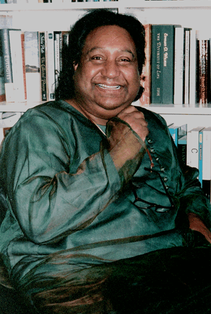
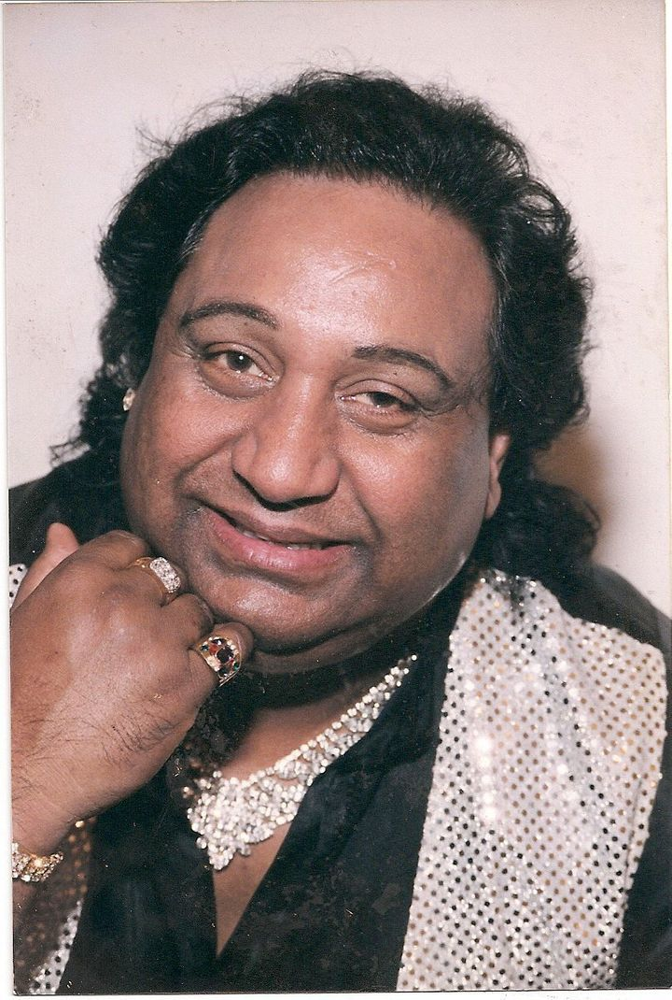

Ifti Nasim
Ifti Nasim nasceu em 15 de setembro de 1946 (a 22 de julho de 2011). Ele era um poeta, escritor, radialista e ativista paquistanês americano gay que co-fundou a Chicago Sangat, uma organização para apoiar a comunidade LGBTQ do sul da Ásia. Nasim foi introduzido no Hall da fama de gays e lésbicas de Chicago em 1996. IIftikhar “Ifti” Nasim nasceu em Faisalabad, Paquistão (então chamado Lyallpur) em 1946, embora uma data exata de nascimento tenha sido difícil de documentar. Em uma entrevista ao "The Friday Times", Nasim afirmou: "Nasci em Lyallpur e minha data de nascimento é 15 de setembro de 1946 ..." Nasim nasceu em uma grande família de sete filhos e, após a morte de sua mãe, seu pai jornalista. se casou novamente e mudou-se para um novo lar. Ele trabalhou em biscates para ajudar a sustentar sua família em dificuldades.
Foi uma infância difícil para Nasim, e a vida na adolescência não foi mais fácil. Em um país predominantemente muçulmano que não permitia que as pessoas vivessem tão abertamente LGBTQ, seu processo de saída foi doloroso. "Quando me dei conta de que sou gay, fiquei totalmente arrasada", disse ele ao "The Friday Times". "Não encontrei motivos para viver. Eu fui muito suicida. Mas, felizmente, encontrei Chandar Nath Ahuja, um psicólogo profissional.
Quando ele tinha 16 anos, Nasim foi baleado depois de ler um poema em protesto contra a lei marcial. "Coloquei um pano na minha perna e fui para casa", lembrou. Não contei a ninguém. No dia seguinte, minha irmã entrou no meu quarto e viu sangue por toda parte. Ele ficou confinado em uma cama pelos seis meses seguintes.
Aos 21 anos, os pais de Nasim pediram um casamento arranjado, mas Nasim disse que ele não queria esgueirar-se com uma esposa. “Eu não queria viver uma vida dupla”, ele disse ao “Chicago Tribune”. “Eu não queria deixar uma esposa em casa e sair e buscar homens. Achei que era uma maneira desonesta de viver. ”Nessa época, Nasim já havia reconhecido a si mesmo que era gay e teve vários encontros sexuais com outros homens.
Depois de se formar em direito pela Universidade Punjab em Lahore, Nasim pediu ao pai que fizesse uma viagem ao exterior para poder continuar seus estudos nos Estados Unidos, um país que Nasim disse ter lido na revista “Life” como “o lugar para ele se estabeleceu em Detroit, matriculou-se na Wayne State University e, em 1974, mudou-se para Chicago. Segundo o colega Azra Raza, a casa de Nasim nos Estados Unidos tornou-se um santuário para os membros da comunidade LGBTQ em busca de asilo.
Nasim também era um conhecido vendedor de carros em Chicago e era conhecido por dirigir em seu Mercedes dourado. Ele também não se coíbe de casacos de peles, calças de couro, um chapéu de cafetão, jóias ostensivas e vestir-se de arrasto. Apesar de seu estilo extravagante, amigos dizem que Nasim era uma pessoa particular e muito humilde quando se tratava de lutar por justiça social.
Em 1986, Nasim ajudou a fundar a Sangat Chicago, uma organização LGBTQ do sul da Ásia denominada em sânscrito por "união". Ele criticou publicamente a guerra, a injustiça social e a homofobia em seu país natal, o Paquistão e outras nações muçulmanas. Além disso, ele contribuiu para um jornal americano paquistanês e apresentava regularmente um programa de rádio semanal chamado "Radio Sargam".
Além de trabalhar em nome das comunidades imigrantes e das pessoas que vivem com HIV / AIDS, Nasim aperfeiçoou e realizou seu primeiro amor – poesia. Ele escreveu em urdu, punjabi e inglês; durante sua vida, três coleções de poesia foram publicadas. Acredita-se que "Narman" (1994) seja a primeira expressão aberta de temas homossexuais na língua urdu. Narman é uma palavra persa para "hermafrodita", e o trabalho foi recebido com controvérsia no Paquistão, onde teve que ser distribuído no subsolo. "Narman" foi seguido por "Myrmecophile" (2000) e "Abdoz" em 2005.
Em 2003, Nasim sofreu um ataque cardíaco e dirigiu-se ao hospital em sua Mercedes e usando um vison. Ele lembrou de uma enfermeira batendo nele, à qual ele respondeu: "Agora não, por favor". Nasim morreu em 22 de julho de 2011, depois de sofrer um ataque cardíaco Algumas fontes listam sua data de falecimento em 23 de julho, mas de acordo com o Índice de Óbitos da Seguridade Social, era o dia anterior. Ele deixou seu parceiro por quase 30 anos. “Ninguém me fez gay. Eu nasci assim ”, disse Nasim uma vez. “A única coisa é que eu não menti sobre isso. Muitos homossexuais se escondem atrás da cortina do chamado casamento. Deveríamos aceitar a verdade, por mais amarga que seja.